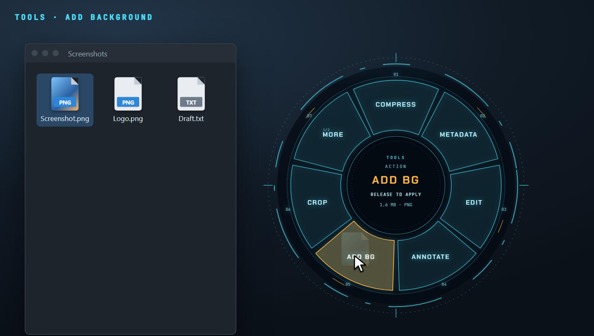
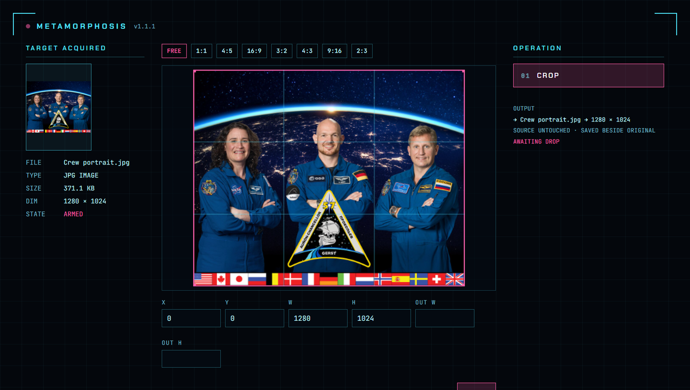
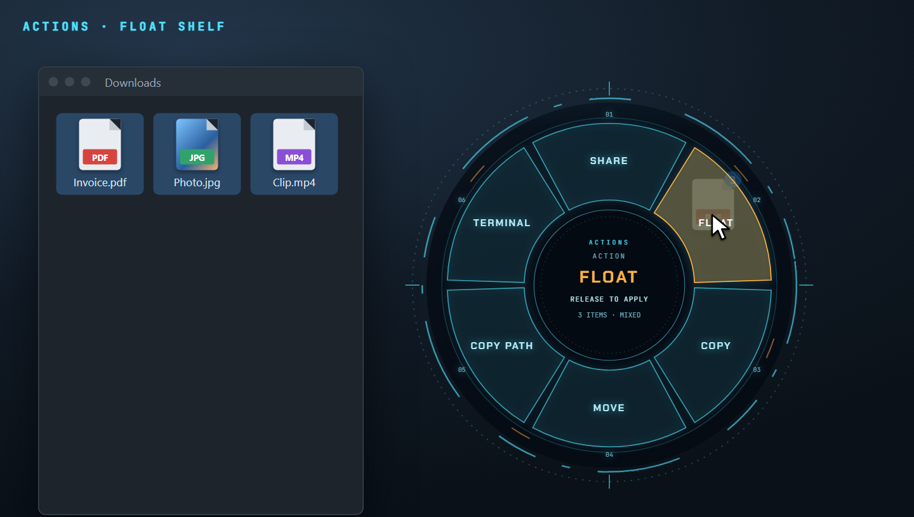
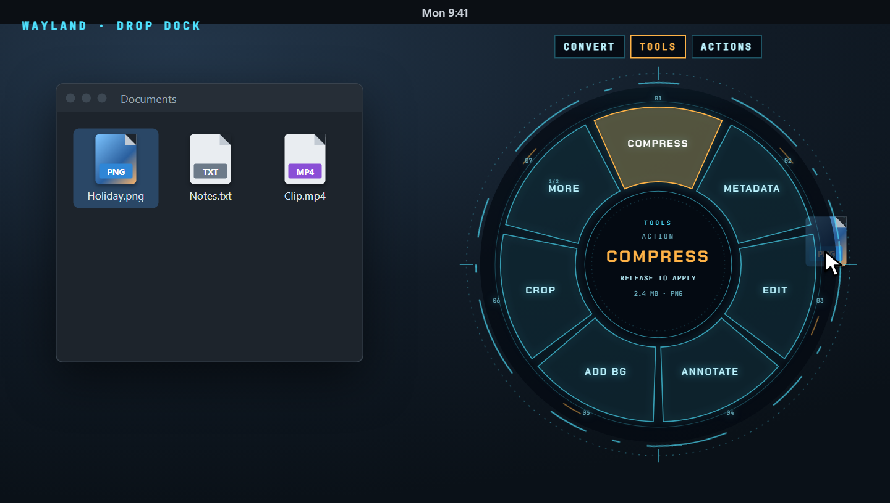
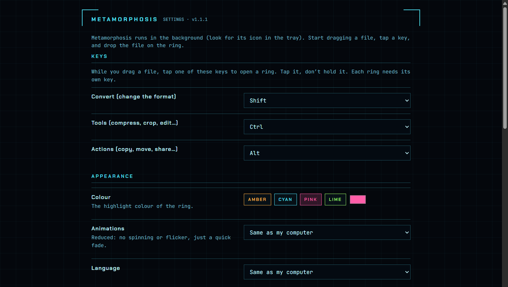

The ring
Opens at the cursor mid-drag and only shows operations that fit the file.
Case study · Desktop app
Drag a file, tap a key, drop it on the ring. Convert and edit files without opening an app.
Report.pdf, mid-drag, about to become a PNG.
The 30-second version
Drag a file, tap Shift, Ctrl or Alt, and a ring of options opens under your cursor. Drop it on one and the result is saved next to the original. A Rust and Tauri app for Windows and Linux that runs fully offline.
The problem
PDF to images, shrinking a photo, pulling audio out of a video: each usually means a heavy editor or an upload site. Tangerine does this on Mac (no affiliation); I wanted it free on Windows and Linux.
What I built
Opens at the cursor mid-drag and only shows operations that fit the file.

Images, PDFs, video, audio, documents and archives, plus local AI: blur faces, OCR, remove backgrounds.

Tools that need input, like crop, open a small editor.

Share, copy, move, or park files on a shelf for later. Chains you reuse become recipes.

Wayland blocks global input, so there the app uses a drop dock instead.

Keys, colours and segments, in English and French. Custom recipes run sandboxed.
How it's built
Each operation is declared once and gets a ring segment, an editor form and CLI flags automatically. All file work happens in Rust.
Tauri 2 shell
Tray, ring, drop dock and editors, opened by global input hooks.
morph-core
Operation registry, jobs, history and undo. Never overwrites a file.
morph-engines
morph-cli
Same features from the terminal.
morph-platform
File manager menus, clipboard, Wayland.
morph-updater
The only code allowed on the network.
The hard parts
01
Custom recipes can run any local command. On Windows they get a low-integrity token, on Linux a Landlock ruleset, so they can only write their own output.
02
The hidden, reused ring window ignored drops. I register a native drop target once it shows.
03
Clean machines exposed shared temp folders, LibreOffice conflicts and Linux-only crashes. I reproduced them in WSL and fixed each one.
How I worked
What I learned
What's next
I'm looking for a full-time job (CDI) in software or AI engineering.